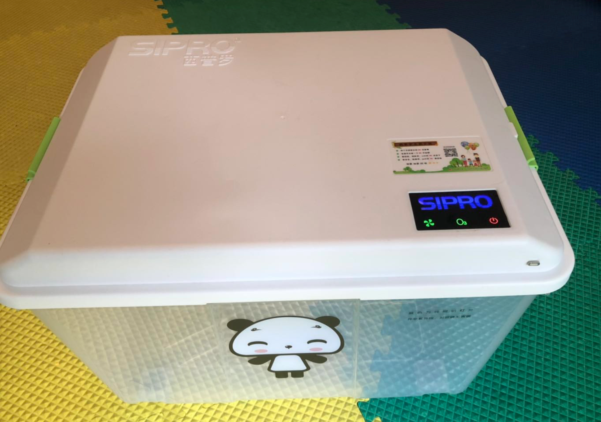
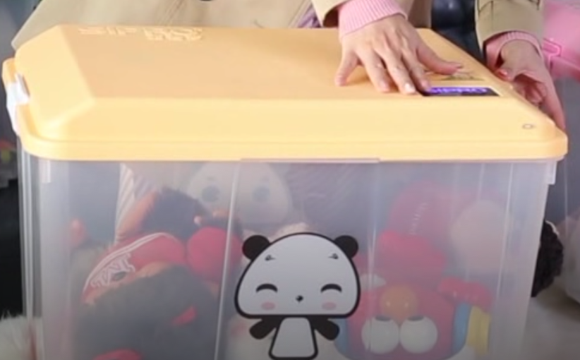
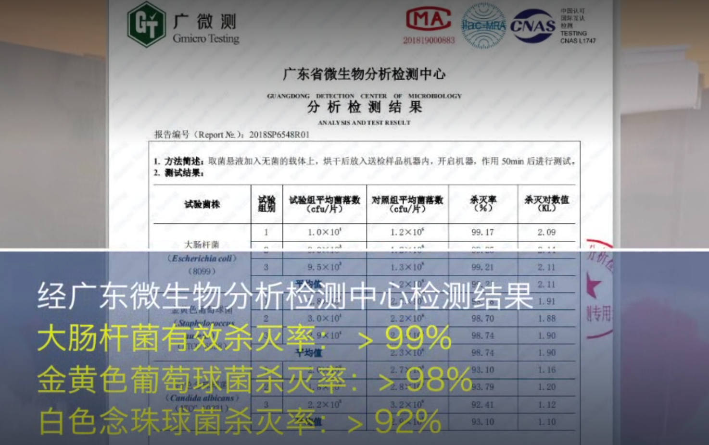
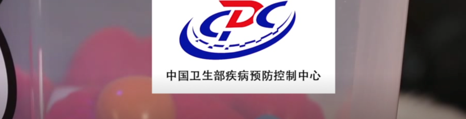

宝宝8个月大，一直都健健康康，孩子就是家里的小天使给我们带来无限的欢乐。可是在五一的这一天，这个小天使竟然不明原因的狂吐不止，吓得我是措手不及，后来连续三天又高烧不退，精神状况极差，去医院一检查，发现他的心跳也过快，139次/分，严重手足口！直接住院治疗。医生跟我们说，应该是被传染的，进去以后医生直接静脉注射利巴韦林，甘露醇 ，基本无进食。给他装了心电监测，心跳过快，约140次/分。夜晚熟睡后心跳稳定在105左右，体温在37.5至38度之间。 凌晨三四点开始体温升高，早上9点至12点之间38.7度,心跳有时升至160次/分。主治医生还检查，说他还没有过危险期。让老公签了一份病重重通知书。然后开始下重药，静脉注射人免疫球蛋白3瓶，利巴韦林，甘露醇等。连续注射了接近24小时。分别在早上8点和下午2点服用退烧药，我不断地用暖水帮他敷脚。体温控制住37.5 ～38.5之间。体温傍晚开始有所下降，就这样经历了四天的样子病情逐步控制好转，短短十天的日子简直就是度日如年，懊悔不已，后悔自己没有照顾好宝宝。
等一切都稳定后，我和爸爸仔细琢磨了一下，二宝这么小怎么会传染手足口呢？平时也很少带她去人多的地方，看着床上的几个小公仔玩具，我突然明白了，那些是姐姐以前小时候玩过的，姐姐小时候也得过手足口，会不会是因为公仔传染的啊？
后来上网查了一下资料，原来有些病菌如果不彻底消毒真的可以存活很久的啊，怎么办怎么办？碗筷可以高温消毒，奶瓶可以高温消毒，但是很多玩具啊公仔啊都没办法高温消毒啊？
当“不干净”真的影响到生活的时候，妈妈我才意识到“除菌”这件小事再怎么重视都不为过。
有一天去邻居家串门，邻居是个旅游达人，每个月都这里飞哪里跑，她家的娃和我们差不多大，一直爷爷奶奶照顾，都说爷爷奶奶带的孩子容易生病，可是人家娃很少生病啊！也是抱着这样的疑问，明为带娃去玩实则去考察考察，哈哈。
一进门就看见两个大箱子，邻居奶奶正在往里面放东西呢，我说：收拾呢？人家说：消毒呢！what？消毒。
于是，后面的结局就是我也买了一个消毒除菌收纳箱，真的是太方便太实用太干净了，怎么夸它都不为过啊！
不用水洗，不用加任何化学清洁剂，更不用烧一大锅水高温消毒，只是需要把需要杀菌的东西统统丢进箱子里，不管吃吃的穿的用的只要是能站的住的东西，盖上盖子，扣上安全扣，点击液晶控制面板的开关按钮，杀杀杀！开始消毒啦。
简单到让你怀疑人生啊，就算你一手抱着娃一手也可以操作啊。


看到没有，就是这货！杀菌效果一流。
它采用的是安全、高效、快速的臭氧消毒方式，有效杀灭各种细菌病毒，简单来说，就是释放出活氧（臭氧），使空气具有强力的杀菌效果。
凡是能被空气接触到的地方都可以被消毒除菌，再也不用担心有消毒死角了。
值得一提的是，经过臭氧消毒的物品，拿出来都有一股青草的香味，我想这也许就是大自然的味道吧。
后来的日子里，SIPRO西普罗消毒除菌收纳箱成了我们家的保护之神！
下面是权威的检测结果：

经过权威机构中国卫生部疾病预防控制中心认证，妈妈们完全可以放心使用！



.jpg)